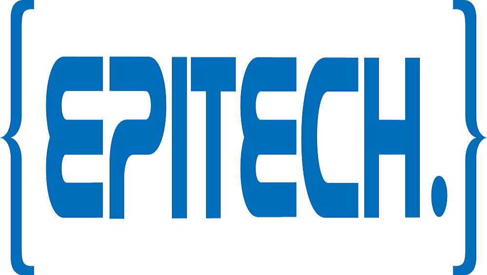

PROJETS EPITECH 
- 29-sep-2020/18-oct-2020
- HTML, CSS, JS, AXIOS, NODEJS, MYSQL
- Les consignes était de crée un site d'offres d'emplois à partir de zero, en implementant differentes fonctionnalitées tels que: un front fonctionnel, creation de session, page administrateur avec un C.R.U.D (create, read, update, delete) sur les annonces et les utilisateurs, creations d'annonces par des recruteurs avec egalement un C.R.U.D sur ces annonces, des requetes SQL sans ORM à une base de donnée, ...
- A venir à partir du 3 novembre
- HTML, CSS, JS, VUEJS, AXIOS, LARAVEL, MARIADB
- Je souhaite personnellement approffondir mes connaissance en dev, decouvrir de nouvelle technologies tels que LARAVEL ou bien meme VUEJS. Nous serons 4 personnes a se lancer ce nouveau defi chacun de son coter, mais en utilisant les meme techno afin de pouvoir s'entraider.
Projet 1: Site d'offres d'emplois
Projet 2: Site de recettes de cuisine
EXPERIENCES PROFESSIONNELLES
Chef de cuisine (06/2019-08/2020)
Gestion des coûts et des stocks, élaborations des menus et de la carte, Gestion d'une equipe de 5 personnes, respect des règles sanitaires, H.A.C.C.P, polyvalence sur l'integralité des postes et etroite collaboration avec la direction.Second de cuisine (04/2018-06/2019)
Responsable de la patisserie, controle de la mise en place, collaboration avec et remplacement du chef de cuisine.Poste froid, poste chaud, patisserie, poste à pizza
Polyvalence sur l'integralité des postes.
Restaurant Le MARCELLINO (Nîmes - 30)
Nov 2017 - Août 2020
postes occupés
Mon experience complete dans la restauration sur mon linkedin...
FORMATIONS
-
Master - En alternance
Septembre 2020 - Aujourd'hui
EPITECH (34) -
BTS mercatique et gestion hôtelière - En alternance
2014 - 2016
IPAC (74) -
BAC Pro - Hôtellerie-Restauration: option cuisine
2011 - 2014
Lycée AMBROISE-CROIZAT (73)